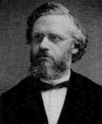

Andi Andhika
Mahasiswa | D121181511 | Founder of Villa Bukit Hijau Malino
Mahasiswa | D121181511 | Founder of Villa Bukit Hijau Malino
Big-O Notation adalah cara untuk mengkonversi keseluruhan langkah-langkah suatu
algoritma kedalam bentuk Aljabar, yaitu dengan menghiraukan konstanta yang lebih kecil dan
koefisien yang tidak berdampak besar terhadap keseluruhan kompleksitas permasalahan yang
diselesaikan oleh algoritma tersebut.
Notasi Big-O berfungsi dalam mengkategorikan algoritma ke fungsi yang menggambarkan upper limit
atau batas atas dari pertumbuhan sebuah fungsi ketika masukan dari fungsi tersebut bertambah
banyak dengan menggunakan fungsi Big-O. Disini nanti kompleksitas algoritma akan dinilai dengan
Notasi Big O yang terdiri dari time complexity atau berapa lama algoritma itu jalan, space
complexity atau berapa banyak memori yang bakal dipakai oleh algoritma.
Algoritma kadang melakukan jumlah operasi yang sama pada setiap kali pemanggilannya
yang
ternyata memerlukan waktu yang konstan. Selain itu ada juga algoritma lain yang melakukan jumlah
operasi yang berbeda, tergantung dari jumlah input pada parameter seperti pemanggilan berurutan
(sequence), maka dapat dipahami bahwa jumlah operasi yang dilakukannya tergantung dari jumlah
pemanggilan. Dan disini harus memperhitungkan parameter yang nilainya mempengaruhi jumlah
operasi yang dilakukan (problem size, kadang juga disebut input size).
Pada algoritma yang memerlukan waktu yang konstan, melipatgandakan problem size
tidak mempengaruhi jumlah operasi yang dilakukan. Apalagi ketika terdapat worst case atau kasus
terburuk, yang maksudnya terdapat jumlah operasi terbanyak yang mungkin dilakukan oleh algoritma
untuk problem size yang diberikan.
Notasi diperkenalkan pertama kali di Jerman, oleh seorang number theorist Paul Bachmann pada tahun 1894, pada edisi kedua dari bukunya yang berjudul Analytische Zahlentheorie (“analitik teori bilangan”), dari edisi pertama yang (belum membahas notasi O besar) yang diterbitkan pada 1892. Notasi ini menjadi populer oleh number theorist Jerman yang lain, Edmund Landau, sehingga terkadang notasi ini disebut Notasi Landau. O Besar adalah singkatan dari “order of” dalam bahasa Inggris, yang sebenarnya adalah lambang Omicron besar, belakangan digunakan huruf latin dengan bentuk yang identik yaitu huruf “O” besar, bukan 0(bilangan nol).

Paul Gustav Heinrich Bachmann
Sumber : Wikipedia.
Pada ilmu komputer, Big O termasuk
asymptotic notations
(asimtot adalah sebuah kurva geometri dari 0 sampai tak terhingga) digunakan untuk mengukur
kompleksitas dari sebuah algoritma. Secara matematis dapat didefinisikan sebagai berikut :
Ada 2 buah fungsi f dan g yang keduanya merupakan fungsi pada bilangan real.
f(n) = O(g(n)) (“=” di sini bukan berarti “ bernilai sama ” akan tetapi “ adalah ”) disebut f(n)
Big-O dari g(n) jika terdapat dua buah bilangan real positif C dan n 0 untuk n ≥ n 0 dalam
bentuk notasi dapat dilihat sebagai berikut :
Infinite Asymptotic, untuk penggunaan pada infinite asymptotic biasanya terdapat dalam bidang ilmu komputer untuk menganalisa kompleksitas dari suatu algoritma sedangkan Infinitesimal Asymptotic sendiri merupakan penggunaan pada infinitesimal asymptotic yang dilakukan untuk menggambarkan kesalahan dalam sebuah aproksimasi. Dalam fungsi matematika berikut contoh ekspresinya :
Di bawah ini adalah klasifikasi dari fungsi-fungsi yang biasa ditemukan dalam
menganalisa sebuah
algoritma. Semuanya menggunakan n yang bertambah hingga tak-hingga. Daftar berikut diurutkan
berdasarkan kecepatan pertumbuhan dari fungsi. Fungsi yang paling lambat berkembang ditulis
lebih dahulu. C adalah konstanta yang dapat berubah.
O(1) Konstan Menentukan apakah suatu bilangan ganjil atau genap,
O(log * n) Iterasi logaritmik Algoritma pencarian Hopcraft dan Ullman untuk himpunan disjoint,
O(log n) Logaritmik Pencarian dalam list terurut dengan Binary Search Algorithm,
O((log n)c) Polilogaritmik Menentukan bilangan prima dengan AKS primality test,
O(n) Linear Pencarian dalam list tidak terurut,
O(n log n) Linearitmik Mengurutkan list dengan Heapsort,
O(n2) Kuadratik Mengurutkan list dengan Insertion Sort,
O(nc), c > 1 Poliomial Pencarian shortest path dengan algoritma Floyd-Warshall,
O(cn) Eksponensial Pencarian solusi untuk traveling salesman problem,
O(n!) Faktorial Menyelesaikan traveling salesman problem dengan menggunakan brute force.
O(2cn) Dobel Eksponensial Pencarian himpunan lengkap dari AC-unifiers
(associative-commutative unifiers) Tidak biasa, namun pertumbuhan yang jauh lebih cepat masih
mungkin terjadi, seperti versi.
satu nilai dari Ackermann function, A(n,n). Sebaliknya, fungsi dengan pertumbuhan sangat lambat
pun dimungkinkan, seperti misalnya invers dari fungsi diatas. Meskipun tidak memiliki batas,
fungsi-fungsi tersebut biasa dianggap konstan dalam praktik umum.
Pernyataan “f(x) adalah O(g(x))” sebagaimana didefinisikan sebelumnya, biasa ditulis
f(x) = O(g(x)) Pernyataan ini adalah penyalahgunaan notasi. Persamaan dari dua buah fungsi tidak
dinyatakan. Properti O(g(x)) tidaklah simetrik: Karena alasan ini, beberapa penulis lebih
memilih menggunakan notasi himpunan dan menulis Menganggap O(g) sebagai himpunan dari fungsi
fungsi yang didominasi oleh g. Dalam penggunaan yang lebih rumit, , O( ) dapat muncul pada
tempat yang berbeda di dalam sebuah persamaan, bahkan beberapa kali untuk masing-masing sisi.
Misalnya, pernyataan berikut benar untuk (n + 1)2 = n2 + O(n) nO(1) = O(en).
Maksud dari pernyataan diatas adalah :
Untuk setiap fungsi yang memenuhi untuk setiap O( ) pada sisi kiri, terdapat
fungsi-fungsi yang
memenuhi masing-masing O( ) pada sisi kanan, melakukan substitusi untuk semua fungsi-fungsi ini
ke dalam persamaan menyebabkan kedua sisi menjadi sama. Misalnya, persamaan ke-3 diatas berarti:
“Untuk setiap fungsi f(n) = O(1), terdapat fungsi-fungsi g(n) = O(en) sehingga nf(n) = g(n)”.